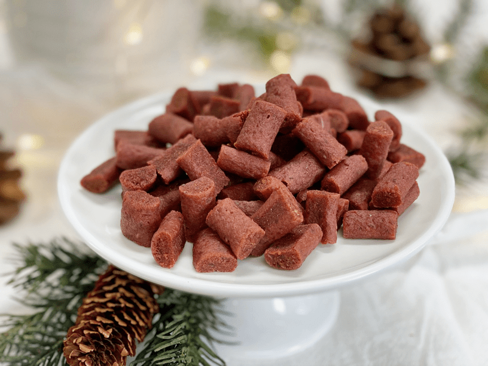
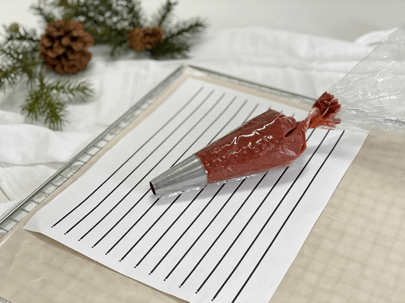
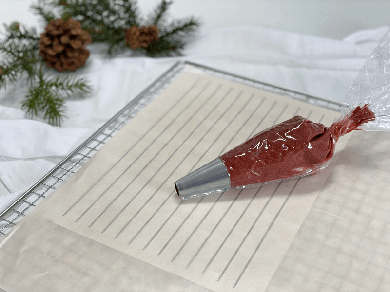
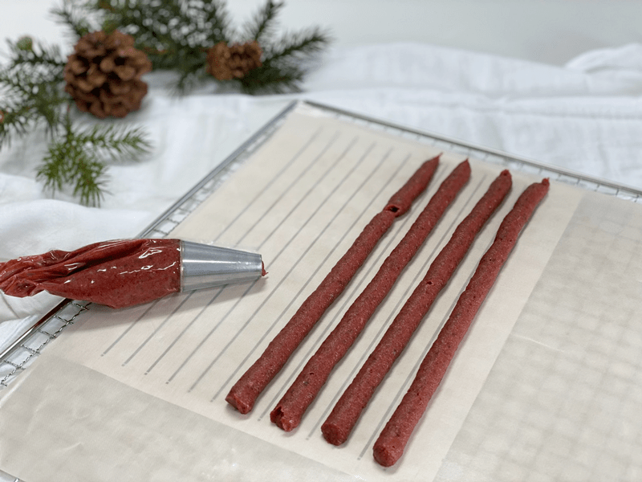

Peppermint Nibblers
raw / vegan / gluten-free / nut-free
When the holiday season rolls around, I’m always intrigued by all the wonderful candies and pastries that make their way to grocery store shelves. That doesn’t mean that I buy them, just intrigued. In fact, everything in a grocery store I find intriguing… ask anyone who shops with me. I love to read labels, look at the packaging, and see what is new on the market. It inspires me.

Every time I see a bag of peppermint candies, I can’t help but wonder how they are made, what is in them, and if they are possible to make at home. I am not out to replicate them; I want the creative culinary bug to bite me. Hehe, These sweet little gems were fun to make, and I love to them add to granolas, trail mixes, or just to nibble on. And let’s not forget to mention that these soft mint candies can be a delicious after-meal treat and can help freshen breath.
The medicine cabinet in the bathroom is an excellent place to store the peppermint oil because it is terrific for many health issues. For starters, peppermint oil also provides relief for indigestion and upset stomach. It can be used to relieve sore muscles when used with a massage or added to bathwater. Due to its energizing effects, peppermint oil is used to manage stress and treat nervous disorders and mental fatigue. Those are just a few health benefits.
For this recipe, you can use peppermint essential oil (which I recommend) or peppermint extract. Just keep in mind that they are two different beasts! Peppermint oil is very concentrated. In this recipe, you can use either 1 teaspoon peppermint extract or 1/4 teaspoon oil at the most; you may need less. So always start with less and work your way up.
 Ingredients:
Ingredients:
Yields 1 1/2 cups nibblers
- 2 cups date paste
- 1/4 cup beet juice
- 1 tsp peppermint extract or 1/4 tsp essential oil (see #3)
- 1/4 tsp Himalayan pink salt
Preparation:
Create the candy batter:
- Remove the pits from the dates as you put them in the measuring cup.
- Be sure to inspect each date as you tear it in half to remove the pit. Mold and insect eggs can infect dried dates. I don’t mean to gross you out; you need to be made aware of this.
- Place the date paste, beet juice, peppermint, and salt in the food processor fitted with the “S” blade. Process until it turns into a creamy paste.
- Taste the batter or mixture and determine if you need more peppermint. If using peppermint oil, it can vary in intensity of flavor… a little goes a long way. Add additional drops until you are pleased with the flavor. You may not need the entire amount you’ve measured.
Fill the piping bag:
- Click (here) to view some photos on how I piped these.
- For piping tools that I use, click (here). I used the piping tip Ateco #804.
- While holding the bag with one hand, fold down the top with the other hand to form a cuff over your hand.
- Fill the bag 1/2 full. If you overfill the bag, the excess batter may squeeze out the wrong end, not to mention that you will have less control of the bag when piping.
- Close the bag by unfolding the cuff and twisting the bag closed; this forces the batter down into the bag.
- “Burping” the bag: Make sure you release any air trapped in the bag by squeezing some of the batter out of the tip into the bowl. I refer to this as “burping” the bag.
Piping:
- Hold the piping bag tip about 1/4″ above the reflex sheet, at a 22.5-degree angle, and slowly guide the lines of batter down the sheet. Don’t hold it to high, or you will create a squiggly line.
- Keep constant pressure on the piping bag as you squeeze out the paste to ensure an even thickness of the line.
- After each completed line of batter, stop and retwist the piping bag, working all paste towards the tip. This technique will eliminate air bubbles in the bag and give you a solid grip.
- Remember: It doesn’t have to be perfect. Just have fun, and if you make a mistake, scoop it up, place back in the bag and do it again.
Dehydrate & store:
- Place the tray in the dehydrator and dry at 145 degrees (F) for 1 hour, then reduce to 115 degrees (F) for 16-24 hours.
- Once they are dry enough, cut them into desired lengths.
- Option: Toss them in a bowl with your choice of flour to prevent them from sticking together. Be gentle through this process. Place the coated candies into a mesh strainer and lightly tap the strainer into the bowl, allowing the excess flour to shake off.
- Store in a mason jar with a lid. I keep mine in the fridge for freshness.
Culinary Explanations:
- Why do I start the dehydrator at 145 degrees (F)? Click (here) to learn the reason behind this.
- When working with fresh ingredients, it is essential to taste test as you build a recipe. Learn why (here).
- Don’t own a dehydrator? Learn how to use your oven (here). I do, however, honestly believe that it is a worthwhile investment. Click (here) to learn what I use.
-

-
A template can be a useful tool.
-

-
Slide the template under the dehydrator sheet.
-

-
Using steady pressure and movement as you pipe the lines out.
© AmieSue.com